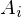

Expression of type Equals¶
from the theory of proveit.logic.sets.unification¶
In [1]:
import proveit
# Automation is not needed when building an expression:
proveit.defaults.automation = False # This will speed things up.
proveit.defaults.inline_pngs = False # Makes files smaller.
%load_expr # Load the stored expression as 'stored_expr'
# import Expression classes needed to build the expression
from proveit import x
from proveit.core_expr_types import A_1_to_m
from proveit.logic import Equals, NotInSet, Union
from proveit.logic.sets import x_notin_all_A
In [2]:
# build up the expression from sub-expressions
expr = Equals(NotInSet(x, Union(A_1_to_m)), x_notin_all_A)
Out[2]:
In [3]:
# check that the built expression is the same as the stored expression
assert expr == stored_expr
assert expr._style_id == stored_expr._style_id
print("Passed sanity check: expr matches stored_expr")
In [4]:
# Show the LaTeX representation of the expression for convenience if you need it.
print(expr.latex())
In [5]:
expr.style_options()
Out[5]:
In [6]:
# display the expression information
expr.expr_info()
Out[6]:
| core type | sub-expressions | expression | |
|---|---|---|---|
| 0 | Operation | operator: 1 operands: 2 | |
| 1 | Literal |  | |
| 2 | ExprTuple | 3, 4 | |
| 3 | Operation | operator: 18 operands: 5 | |
| 4 | Operation | operator: 6 operands: 7 | |
| 5 | ExprTuple | 21, 8 |  |
| 6 | Literal |  | |
| 7 | ExprTuple | 9 | |
| 8 | Operation | operator: 10 operands: 11 |  |
| 9 | ExprRange | lambda_map: 12 start_index: 16 end_index: 17 |  |
| 10 | Literal |  | |
| 11 | ExprTuple | 13 | |
| 12 | Lambda | parameter: 27 body: 14 |  |
| 13 | ExprRange | lambda_map: 15 start_index: 16 end_index: 17 |  |
| 14 | Operation | operator: 18 operands: 19 |  |
| 15 | Lambda | parameter: 26 body: 20 |  |
| 16 | Literal |  | |
| 17 | Variable |  | |
| 18 | Literal |  | |
| 19 | ExprTuple | 21, 22 |  |
| 20 | IndexedVar | variable: 24 index: 26 |  |
| 21 | Variable |  | |
| 22 | IndexedVar | variable: 24 index: 27 |  |
| 23 | ExprTuple | 26 |  |
| 24 | Variable |  | |
| 25 | ExprTuple | 27 |  |
| 26 | Variable |  | |
| 27 | Variable |  |